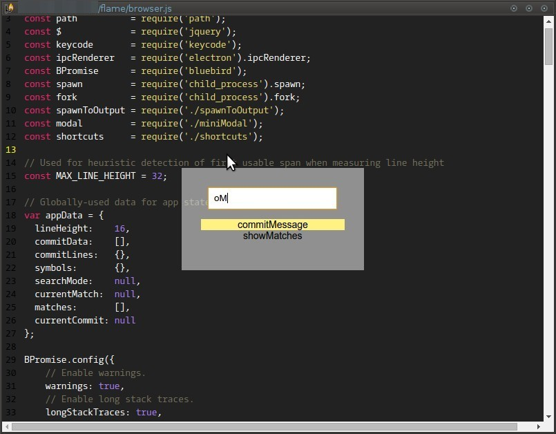
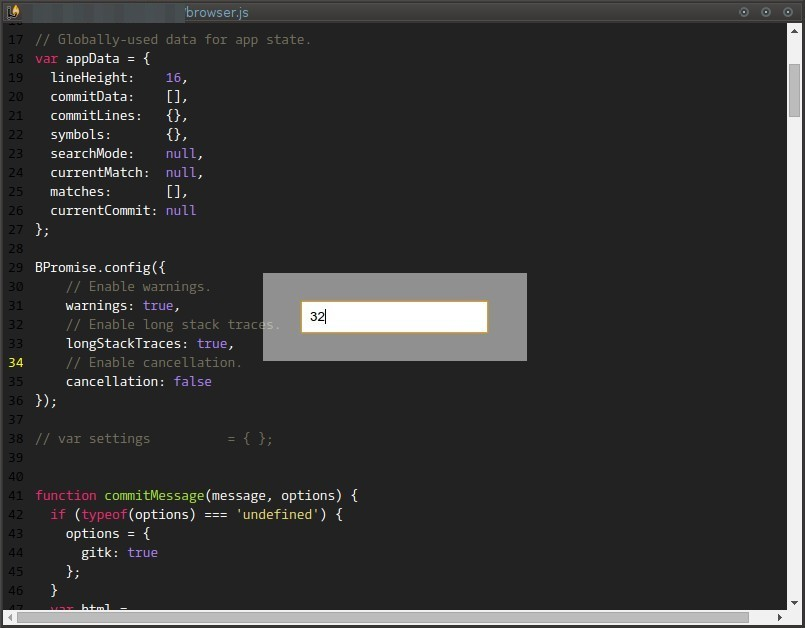

Flame
A prettier git blame
This is a small (in concept, not size) app that functions similiarly to git gui blame, but with syntax highlighting
and a simpler UI.
Features
- Syntax highlighting for many languages (courtesy of highlight.js)
- Jump to commit in log (requires GitK)
- Function search (depending on language)
Screenshots
Initial view

Ctrl+R function search

Ctrl+G goto line

Click on a line to show commit info

Build
git clone https://github.com/lingo/flame.git
cd flame
npm install
gulpUsage
flame path/to/file